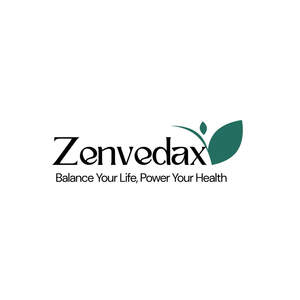

Trade Mark Journal No.2025/040 3 October 2025
UK00004267097 20 September 2025 (5)

- Class 5
- Vitamins and vitamin preparations; Prenatal vitamins; Gummy vitamins; Vitamin supplements; Vitamin and mineral supplements; Dietary supplements consisting of vitamins; Vitamins for animals; Preparations of vitamins; Liquid vitamin supplements; Vitamin and mineral food supplements; Vitamin supplements for animals; Vitamins for pets; Vitamin and mineral supplements for pets; Multivitamins; Preparations for supplementing the body with essential vitamins and microelements; Vitamin drinks; Mineral nutritional supplements; Calcium supplements; Health food supplements made principally of vitamins; Anti-oxidant supplements; Vitamin tablets; Anti-oxidant food supplements; Vitamin supplements for use in renal dialysis; Vitamin and mineral preparations; Nutritional supplements; Protein supplements; Vitamin preparations in the nature of food supplements; Antioxidant pills; Liquid nutritional supplements; Vitamin supplement patches; Lecithin dietary supplements; Probiotic supplements; Mineral dietary supplements; Vitamin preparations; Protein dietary supplements; Zinc dietary supplements; Folic acid dietary supplements; Health-aid foods supplements containing ginseng; Vitamin drops; Chlorella dietary supplements; Mineral dietary supplements for animals; Mineral dietary supplements for humans; Dietary and nutritional supplements; Flaxseed dietary supplements; Liquid dietary supplements; Dietary supplements; Whey protein dietary supplements; Protein powder dietary supplements; Flaxseed oil dietary supplements; Prebiotic supplements; Colostrum supplements; Antioxidants; Multi-vitamin preparations; Protein supplements for animals; Herbal supplements; Soy protein dietary supplements; Effervescent vitamin tablets; Enzyme dietary supplements; Medicated food supplements; Food supplements; Energy gels (dietary supplements); Multivitamin preparations; Dietary food supplements; Linseed dietary supplements; Liquid herbal supplements; Yeast dietary supplements; Calcium tablets as a food supplement; Propolis dietary supplements; Nutraceuticals for use as a dietary supplement; Glucose dietary supplements; Acai powder dietary supplements; Albumin dietary supplements; Wheat dietary supplements; Food supplements consisting of amino acids; Dietary supplements for infants; Health food supplements made principally of minerals; Vitamin fortified beverages for medical purposes; Dietary supplements for animals; Dietary supplements for humans; Anti-oxidants obtained from herbal sources; Linseed oil dietary supplements; Homeopathic supplements; Nutritional supplements consisting primarily of calcium; Pollen dietary supplements; Vitamin A preparations; Medicated supplements for foodstuffs for animals; Casein dietary supplements; Vitamin C preparations; Alginate dietary supplements; Dietary supplements for controlling cholesterol; Antibiotic food supplements for animals; Mixed vitamin preparations; Nutritional supplements consisting primarily of magnesium; Diet capsules; Dietary supplements and dietetic preparations containing CBD oil; Nutritional supplement energy bars; Vitamin D preparations; Nutritional supplements consisting primarily of zinc; Health-aid foods supplement containing red ginseng; Nutritional supplements consisting of fungal extracts; Dietary supplements for pets; Anti-oxidants for dietary use; Wheat germ dietary supplements; Vitamin B preparations; Soy isoflavone dietary supplements; Dietary supplement drinks; Nutritional supplements for veterinary use; Zinc supplement lozenges; Nutritional supplements for livestock feed; Dietary supplements consisting primarily of calcium; Food supplements for sportsmen; Capsules for medicines; Mineral supplements for feeding livestock; Vitamin enriched bread for therapeutic purposes; Dietary supplements and dietetic preparations; Protein supplement shakes; Powdered nutritional supplement energy drink mix; Brewer's yeast dietary supplements; Dietary supplements in powder form; Ganoderma lucidum spore powder dietary supplements; Powdered nutritional supplement drink mix; Tonics [medicines]; Nutritional supplements consisting primarily of iron; Mineral water salts; Salts (Mineral water -); Mineral salts for baths; Salts for mineral water baths; Baths (Salts for mineral water -); Mineral salts for medical purposes; Pyrethrum powder; Milk powder for babies; Powder of cantharides; Cantharides (Powder of -); Medicated talcum powder; Medicated body powder; Blood protein fractions; Human plasma protein; Milk powders [foodstuff for babies]; Fitness and endurance supplements; Nutritional supplement meal replacement bars for boosting energy; Dietary supplements promoting fitness and endurance; Dietary supplement drink mixes; Dietary supplements for medical use; Ground flaxseed fiber for use as a dietary supplement; Food supplements for dietetic use; Food supplements for veterinary use; Feed supplements for veterinary use; Dietary supplements consisting primarily of magnesium; Food supplements for medical purposes; Dietary supplements consisting primarily of iron; Dietary food supplements used for modified fasting; Nutritional supplements made of starch adapted for medical use; Powdered fruit-flavored dietary supplement drink mix; Bee pollen for use as a dietary food supplement; Activated charcoal dietary supplements; Nutritional drink mix for use as a meal replacement; Food supplements in liquid form; Dietary supplements for pets in the nature of a powdered drink mix; Dietary supplements with a cosmetic effect; Food supplements for non-medical purposes; Dietary supplemental drinks; Herbal dietary supplements for persons special dietary requirements; Royal jelly dietary supplements; Pine pollen dietary supplements; Natural dietary supplements for treating claustrophobia; Dietary supplements for humans not for medical purposes; Health food supplements for persons with special dietary requirements; Dietary and nutritional preparations; Dietary pet supplements in the form of pet treats; Dietary fiber to aid digestion; Dietetic foods for use in clinical nutrition; Medicated supplements for animal feedstuffs; Dietary supplements for human beings; Delivery agents in the form of dissolvable films that facilitate the delivery of nutritional supplements; Delivery agents in the form of coatings for tablets that facilitate the delivery of nutritional supplements; Complementary feed; Fodder supplements for veterinary purposes; Evening primrose oil for medical use; Food supplements consisting of trace elements; Pharmaceutical preparations in strip form.
Yogi Trade Limited